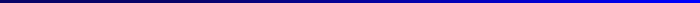

Lei Zhang
Mathematisches Institut
Freie Universität Berlin
Arnimallee 3 - Room 112A
14195 Berlin, Germany
Office: Arnimallee 3 - Room 112A, 14195 Berlin, Germany - Map of Arnimallee 3
Email: l.zhang@fu-berlin.de
Phone: +49 / (0)30 / 838-75398
Here is my CV
Here is my list of publications
Here is my PhD thesis
Publications
- The Homotopy Sequence for Nori's Fundamental Group .
Journal of Algebra, Vol. 393, pp. 79 - 91, doi: https://doi.org/10.1016/j.algebra.2013.07.010, 2013.
- The Homotopy Sequence for the Algebraic Fundamental Group .
International Mathematics Research Notices, no.22, 6155-6174., doi: 10.1093/imrn/rnt163, 2014.
- Nori's Fundamental Group over a non Algebraically Closed Field.
Annali della Scuola Normale Superiore di Pisa - Classe di Scienze, Vol. XVIII, pp. 1349-1394, doi: 10.2422/2036-2145.201604_007, 2018.
- Algebraic and Nori Fundamental Gerbes (with Fabio Tonini).
To appear in Journal of the Institute of Mathematics of Jussieu, 1-43. doi: 10.1017/S147474801700024X.
- F -divided sheaves trivialized by dominant maps are essentially finite (with Fabio Tonini).
Transactions of the American Mathematical Society, Volume 371, Number 8, 15 April 2019, Pages 5529-5549, doi:
https://doi.org/10.1090/tran/7444, 2019.
- Nori fundamental gerbe of essentially finite covers and Galois closure of towers of torsors (with M. Antei, I. Biswas, M. Emsalem, F. Tonini).
Selecta Mathematica, 25: 18, doi: https://doi.org/10.1007/s00029-019-0449-z, 2019.
Prepublications
- Essentially Finite Vector Bundles on Normal Pseudo-proper Algebraic Stacks (with Fabio Tonini).
https://arxiv.org/pdf/1702.03751.pdf.
- Neukirch-Uchida Theorem for Purely Inseparable Field Extensions (with M. Romagny and F. Tonini).
https://arxiv.org/pdf/1711.06898.pdf.
- A crystalline incarnation of Berthelot's conjecture and Künneth formula for isocrystals (with V. Di Proietto and F. Tonini).
https://arxiv.org/pdf/1812.05153.pdf.
Teaching
Summer semester 2018 I hold a student seminar on Quadratische Formen.
Winter semester 2017-2018 I taught a course on Crystals and Crystalline Cohomology.
Students
I have supervised a master student Ragnarsson Amazeen, here is his thesis.
Some Lecture Notes
- An Introduction to \(\text{Bun}_G\). (Forschungsseminar at FU-Berlin, June 1, 2017)
The latest version is here.
Last Modified: